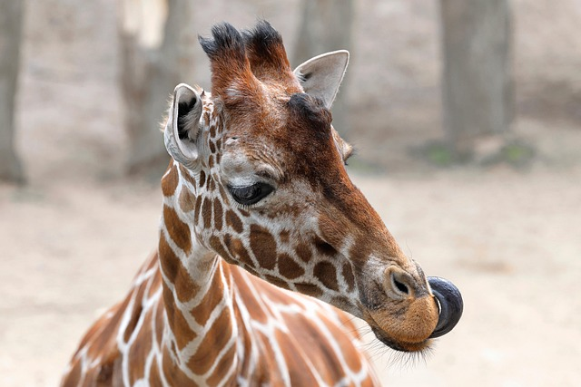
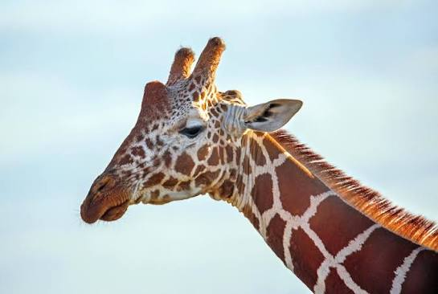
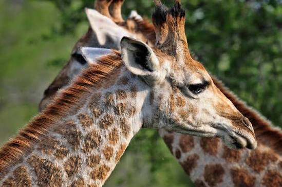
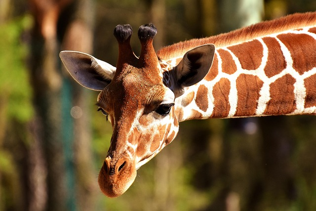

Sentinel of the Serengeti
Summon a Masai Giraffe with 4d10 HP that grants high-ground reconnaissance on your turn:
- +10ft vision range over tall foliage
- 2d6 hoof stomp melee damage
- Immune to low-branch ambushes

Reticulated Vanguard
Deploy a geometric-patterned defender whose polygon coat confuses enemy targeting systems:
- +4 stealth bonus in dappled sunlight
- 18-inch prehensile tongue disarm attack
- Can sprint up to 35 mph in short bursts

Acacia Harvester
Call upon a Southern Giraffe specialist capable of stripping thorny treetops for party rations:
- Heals party for 2d4 HP with fresh leaves
- Total immunity to thorn and spike damage
- Requires only 30 minutes of sleep per day

Tower of the Rift Valley
Channel the rare Baringo bloodline, sporting white lower-leg greaves and five distinct ossicones:
- 1d8 neck-swing knockback attack
- Intimidates predators within a 20ft radius
- Grants +2 morale boost to all allies